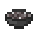
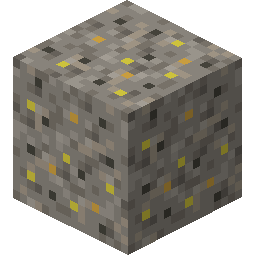

パンニングPanning is a method of obtaining small pieces of certain native ores by searching in rivers and other waterways.
Panning makes use of Ore Deposits which are found in gravel patches in the bottom of lakes and rivers.
In order to get started panning, you will need an empty pan.


上に示したように、粘土を未焼成のふるいに ナッピング することができます。


白みがかった黄色****
ふるいを ナッピング したら、 焼成 して ふるい を作成できます。
次にある種の 鉱石の堆積物 を見つける必要があります。 自然銅、自然銀、自然金、錫石など、いくつかの異なる鉱石が砂利などと混ざって生成されます。
Example

一部の粘板岩にある自然金の混じった砂利。
すべての準備が整ったらパンニングを始められます!
1. ふるいを手に持って、鉱石の混じったブロック上で使用します。
2.水の中に立ち、Right Click を押し続けるとパンニングが始まります。
3. しばらくすると、運が良ければ、インベントリに小さな鉱石が入ってくるかもしれません。

パンニングで得られるもの
パンニングにより、鉱石、石ころ、および 宝石 の 3 つの製品が得られます。 確率は次のとおりです:
- 鉱石: 50%
- 石ころ: 25%
- 宝石: 1%各岩石の種類には、特定の宝石が紐づけられていてそれに基づいて宝石がドロップします。